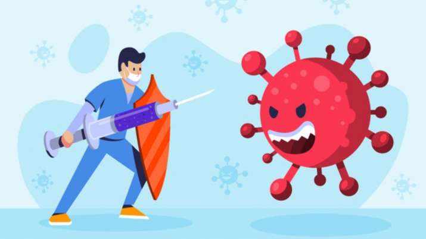

Hello I am Aryaan and here are my best games bellow:
Games use p5.js,p5.play,matter.js libaries in javascript, use p5.js web editor
Click on the image to play the game
1) Fight Corona Part-1

#Information about the game
1. In this game there are two players
2. The mission of the game to stop the virus from crossing the saftey line.
3. You and your friend will compet to stop the virus , you will get 1 point when you stop it.
4. There is a bonus point saitizer if you get it you will get 5 points.
5. After few minutes if the will over and I player with high score will win.
2) World Hardest Game

#Information about the game
1. In this game you have to help the alien to reach it space ship.
2. As the astroids are blocking alien way.
3. Do your best you cannot cannot help the alien to reach the sapce ship.
4. That's why it is world's hardest game.
Fruit Ninja.

#Information about the game
1. In this game there is a knife which the control it by mouse.
2. When you touch the fruit with the knife you will get points.
3. If you touch the bomb you will lose.
Thank You for seeing my games
If you want to see my white hat jr profile click on the bellow:
Aryaan White hat profile